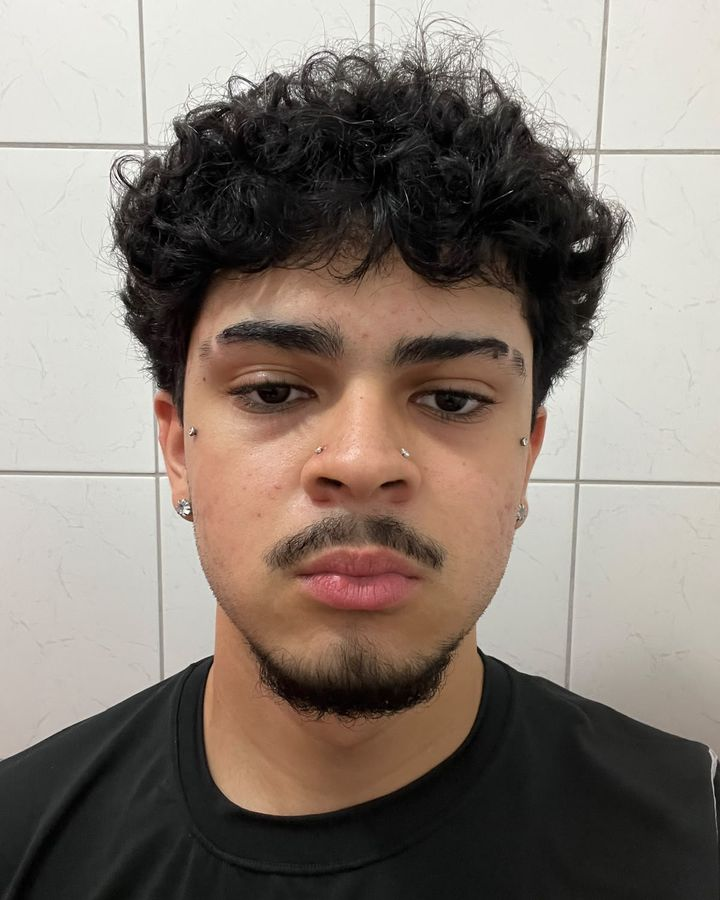

ShowroomSP
FashionWEEK
Pop-upDROP
Moda
Gosto de me vestir bem e quero estar em showrooms e pop-ups, fazendo networking com quem também vive tecnologia e moda ao mesmo tempo.
Desenvolvedor Full Stack em formação na FIAP School. Eu crio sites

Eu jogava tanto que um dia a pergunta mudou: como isso é feito?
Meu amor pela tecnologia nasceu nos games. Passei a infância jogando e, de tanto jogar, quis entender o que existe por trás de cada app, site e jogo. Hoje estudo Desenvolvimento Full Stack no ensino técnico da FIAP School e estou construindo a base para transformar essa curiosidade em carreira.
Quero dar orgulho e alegria aos meus pais, conhecer pessoas que somam na minha caminhada, aprender novas linguagens de programação e novas línguas, e desenvolver programas e jogos que as pessoas usem de verdade.
Muitas horas em jogos e a curiosidade de saber como eles funcionam.
Início do técnico em Desenvolvimento Full Stack: HTML, CSS, JavaScript e Python.
C#, SQL Server Management Studio e projetos práticos publicados no GitHub.
Aprendendo React e buscando a primeira oportunidade profissional na área.
Minha árvore de habilidades hoje. A barra mostra onde estou e quanto ainda vou evoluir.
Exercícios e projetos do curso que mostram minha evolução em lógica, dados e interfaces. Também já explorei Dart.
Tecnologia é o meu caminho, mas é aqui que eu busco estilo, energia e ideias.
Gosto de me vestir bem e quero estar em showrooms e pop-ups, fazendo networking com quem também vive tecnologia e moda ao mesmo tempo.
Carros esportivos, tunados, drift e encontros automotivos. Passe o mouse no card e acelere.
Meu maior hobby. No tempo livre, a música não para, principalmente rap. É a trilha sonora de cada linha de código.
Tocando agora · rap no repeatMeu sonho é viajar para Paris e ser convidado para a Paris Fashion Week, ou para a SPFW aqui em São Paulo. A tecnologia é a passagem que vai me levar até lá.
Estou pronto para meu primeiro desafio profissional. Me chame para um estágio, um projeto ou só para trocar ideia sobre tecnologia e moda.
viniciusfurts@gmail.com
(11) 91415-0572